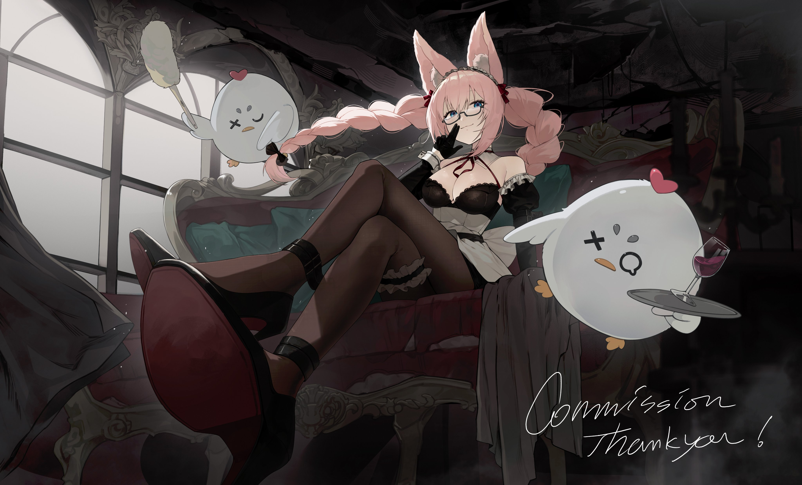
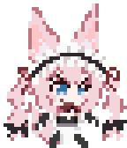

Un bot divertido para el servidor de Kissu, creado para mejorar tu experiencia en Discord.
KissuBot fue creado por @Joabem1629 para hacer la vida en Discord más entretenida y facilitar la interacción con contenido multimedia y comandos divertidos.
